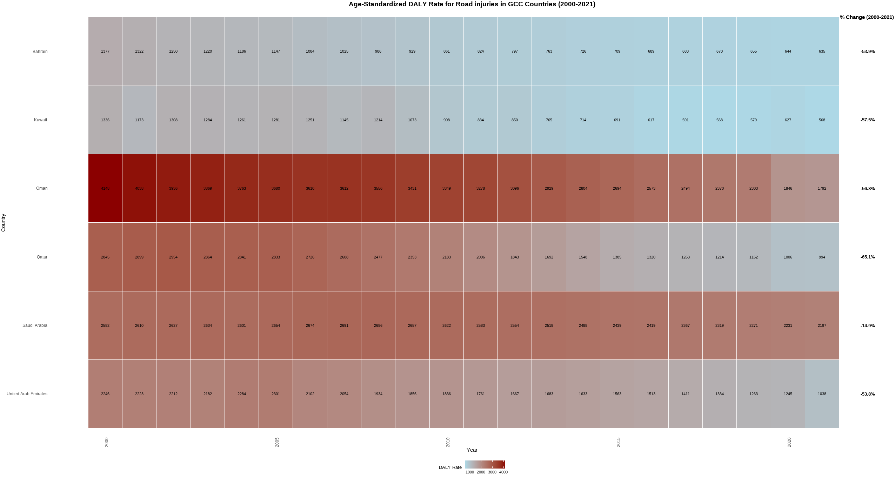

My Projects
Road Injury DALY Dashboard (GCC)
Interactive dashboard showing Disability-Adjusted Life Years (DALYs) due to road injuries across GCC countries.

Bump Area Plot
A visualization of IHME data trends over time.

GCC Heatmap
Heatmap analysis of GCC data.
WISQARS National Violent Death Reporting System
Treemap visualization of violent death data using Stata 18.

General Authority for Statistics Population Report
Statistical analysis and visualization using RStudio.
Download GSTAT Report (Word)